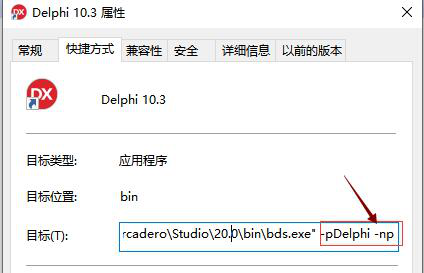
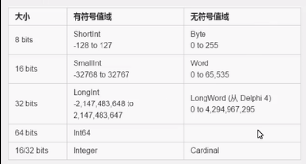

一、Delphi 安装
1.1、快速启动程序，去掉加载开始欢迎页。
在快捷方式--目标中添加路径 -pDelphi之后加 -np
(例如，rcadero\Studio\20.p\bin\bds.exe" -pDelphi -np)

1.2、安装CnPack IDE (CnWizards 是 CnPack 项目组的主力产品之一，中文全称是 CnPack IDE 专家包，英文全称是 CnPack IDE Wizards，简称 CnWizards。CnWizards 是一组集成在 Delphi/C++Builder/BDS 的 IDE 中，用于增强 IDE 功能、提高 IDE 的可用性及开发效率的免费、开放源码工具。)
安装下载链接：CnPack IDE
二、基础知识
2.1、工程项目
1 program Project2; //创建工程名称
2
3 {$APPTYPE CONSOLE} {项目类型，CONSOLE-创建控制台应用}
4
5 {$R *.res}
6 uses
7 System.SysUtils; {类似引入Delphi}
8
9 begin {开始}
10 Writeln('我的控制台');
11 Readln;
12 end. {结束}
2.2、Delphi 注释 方法
2.2.1、{}
2.2.2、// Delphi 学习c系语言的注释方式
2.2.3、(* 注释*)
2.3 Delphi运行
2.3.1、连接编辑器
2.3.2、编译：将代码（文字）翻译成计算机能够识别的符号
2.3.3、运行： 计算机开始执行它的能够识别的符号
2.4 Delphi命名规范
2.4.1、见名知意，在定义一些东西尽量使用英文
2.4.2、驼峰原则：
大驼峰 StudentName 每个单词单词首字母大写
小驼峰 studentName 有第二个单词开始，每个单词首字母大写
2.5 数据类型
2.5.1、数值型
整数
小数（实数）
2.5.2、逻辑性
真(ture)---非0为真
假(false)----0为假
2.5.3、指针类型
2.5.4、数组、字界、集合、自定义类型（结构体、类）
2.5.5、字符串

2.6 强制类型转换
2.6.1、四舍五入
2.6.2、自动类型转换：整数转小数
取值范围小的在数据类型向取值范围大的数据类型进行转换
2.6.3、强制类型转换：小数转整数（精度减小）
取值范围大的在数据类型向取值范围小的数据类型进行转换
要转换成的数据类型（等待被转换的类型）